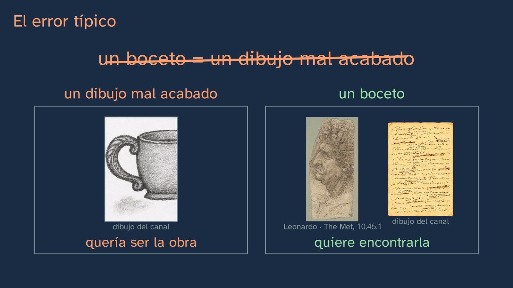
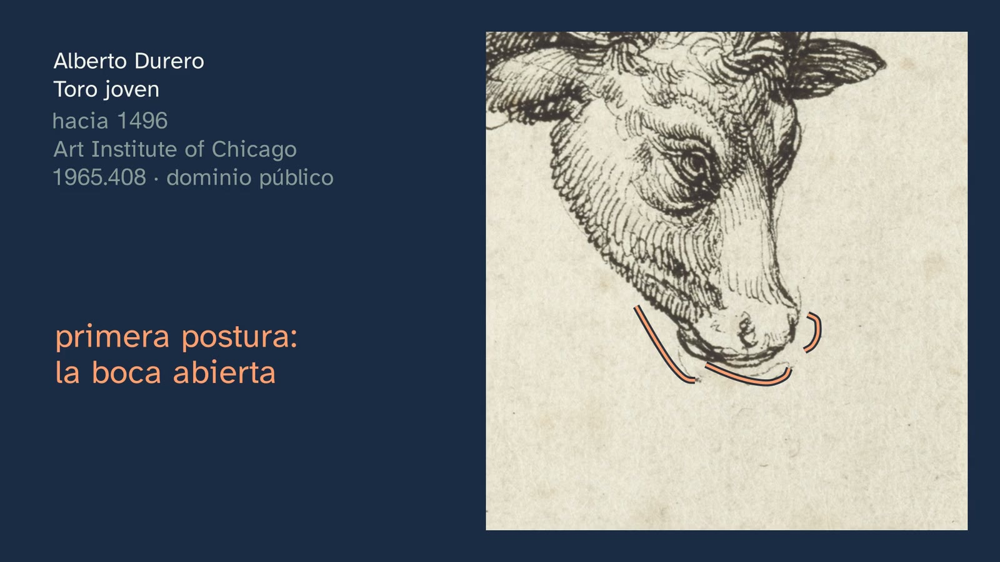
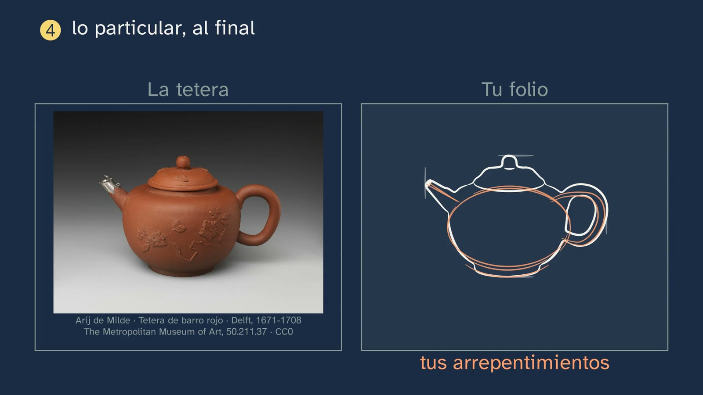

El boceto: pensar dibujando
En pocas palabras
Es una clase de teoría, con Marina en su mesa, con un taller dentro. Las clases 2 y 3 enseñaron a medir y a encajar; ésta enseña cómo se empieza un dibujo, y por qué los grandes maestros empezaban a tientas. Responde a una pregunta: ¿por qué dibujaban así, y qué es un boceto?
Abre con las soluciones de la clase 3 y con un gancho del Met: hacia 1490-1494, Leonardo empezó a carbón el perfil exagerado de un viejo y, al repasarlo con la pluma, lo convirtió en un hombre más joven. La lupa enseña las dos narices, la del carbón y la de la tinta. Antes de ninguna explicación, el alumno dibuja un minuto lo que tiene en la mesa, como le salga, y lo guarda.
Las palabras. Boceto viene del italiano bozzetto, de bozza, la piedra sin desbastar. Un boceto es la primera idea de la obra entera, hecha deprisa para poder cambiarla. Se distingue del apunte, del estudio y del arrepentimiento por su para qué: el boceto busca la obra, el apunte guarda lo que viste y el estudio aprende una parte. Y Vasari, a mediados del siglo XVI: se hacen «per tentare l'animo di quel che gli sovviene» (para tantear lo que se le ocurre).
La razón, en palabras de Leonardo (Trattato della pittura, § 185): no hay que acabar nada al principio, porque lo acabado da pena moverlo; hay que componer a lo grueso, como los poetas que tachan sus versos, y atender antes a que los movimientos de las figuras cuadren con lo que sienten que a su belleza. De ahí, el error típico: un boceto no es un dibujo mal acabado. Un dibujo mal acabado quería ser la obra; un boceto quiere encontrarla.
¿Cómo lo sabemos? Por sus dibujos, descritos por sus museos: cuatro Vírgenes de Leonardo en una sola hoja de punta de plata, que no se borra (Met); la primera postura del toro de Durero, con la boca abierta (Art Institute of Chicago); y los contornos repetidos de los bebés de Rafael, que son movimiento (Cleveland). Por qué funciona: Leonardo pedía una libreta siempre encima, sin borrar nunca, porque la memoria no retiene tantas formas (el cuaderno rosa de Rafael, los ocho cuadernos de Goya); y la psicología ha medido otro límite que va en la misma dirección: mientras piensas, la cabeza sostiene a la vez muy pocas formas. El papel las sostiene todas.
El método, en un ejemplo entero sobre la tetera de barro de la clase 3: dónde va y cuánto ocupa (cuatro rayitas), la forma grande con líneas suaves y sin goma, la comprobación y la línea buena reforzada, y lo particular al final. Siguen varias soluciones (tres marcos con la forma del folio, dos de la pizarra y uno del alumno), los errores típicos buscados en el primer intento del alumno, tres ejercicios y la pregunta abierta.
Objetivo. Al terminar, el alumnado sabrá distinguir boceto (o esbozo), apunte y estudio, hacer un boceto del natural de lo general a lo particular, y leer en los dibujos de los maestros cómo pensaban con el lápiz.
Currículo
Real Decreto 243/2022, anexo II, Dibujo Artístico, materia obligatoria de 1.º de Bachillerato en la vía de Artes Plásticas, Imagen y Diseño. Citas comprobadas en el texto consolidado del BOE.
| Elemento | Qué dice el decreto | Dónde se trabaja |
|---|---|---|
| Saber básico (bloque A, «Concepto e historia del dibujo») | «El dibujo como proceso interactivo de observación, reflexión, imaginación, representación y comunicación.» | Las dos narices (1:41), los maestros que dudan (5:30–7:26) y una memoria de más: dibujar es pensar (7:31–8:42) |
| Saber básico (bloque B, «La expresión gráfica y sus recursos elementales») | «El boceto o esbozo. Introducción al encaje.» | Las palabras del oficio (2:47) y el método (8:42–10:14), con el encaje dentro del boceto (9:38) |
| Competencia específica 1 | «Comprender el dibujo como forma de conocimiento, comunicación y expresión, comparando el uso que se hace de él en manifestaciones culturales y artísticas de diferentes épocas…» | Dibujos de Leonardo, Durero, Rafael y Goya, de 1480 a 1820, y para qué los hicieron |
| Competencia específica 3, descripción | «la realización de bocetos a partir de la observación detallada de la realidad» | La tetera, paso a paso, y los tres bocetos de un objeto de casa |
| Competencia específica 8, descripción | «Cuando se dibuja del natural, se debe observar, analizar y retener la información que se quiere trasladar al dibujo» | El límite de la memoria de trabajo, y el cuaderno que la amplía (7:31–8:42) |
| Criterio 1.1 | «Identificar el dibujo como forma de conocimiento, comunicación y expresión, reflexionando con iniciativa sobre su presencia en distintas manifestaciones culturales y artísticas…» | Leer en los dibujos de los maestros cómo pensaban (5:30–7:26) y el ejercicio 3 (Watteau) |
| Criterio 3.2 | «Analizar, interpretar y representar gráficamente la realidad mediante bocetos y esbozos, utilizando las herramientas adecuadas y desarrollando una expresión propia, espontánea y creativa.» | El método (8:42), los tres marcos (10:14) y el ejercicio 1 |
Lo que hay que traer. De la clase 3, la tetera de barro y la idea de lo grande primero (0:19); de las clases 2 y 3, medir con el lápiz el alto contra el ancho, que aquí se usa para comprobar (9:38).
Lo que piden Andalucía y Madrid. Con el mismo texto, junto al boceto: «Cuadernos de bocetos de artistas: Leonardo da Vinci, Goya, Van Gogh, Picasso, Andy Warhol, Frida Kahlo». La clase enseña los de Leonardo (lo que pedía y sus hojas), el cuaderno rosa de Rafael y una página de un cuaderno de Goya. Las obras de Picasso, Warhol y Kahlo siguen protegidas en España, y el canal no las enseña.
Cómo está construida la clase
Capítulos del vídeo
Algo más de trece minutos, en catorce capítulos. Es una clase de concepto con un taller dentro: el alumno dibuja un primer intento antes de ninguna explicación, sigue el método con la tetera si quiere, completa el tercer marco con el vídeo en pausa y, al final, busca los errores en su propio primer intento. La parte de los maestros va con la lupa sin cortes sobre cada hoja y su ficha a un lado; cada duda se señala en el dibujo cuando la voz la nombra.
| Capítulo | Qué pasa | Por qué así |
|---|---|---|
| Qué vamos a ver | Marina presenta la clase. El mapa del tema y lo que hace falta: un lápiz, un folio y algo de la mesa (0:04). | El mapa, en todas las clases. |
| Lo que ya sabes | ¿Qué dibujaste primero en la tetera, y por qué? (0:19, pausa). Su cuerpo: lo grande primero; hoy, un método (0:29). | Recuperar la clase 3, que hoy se convierte en método. |
| Las soluciones | Los tres ejercicios de la clase 3, cada uno con su imagen: los sólidos (0:41), los huecos de la silla y el triángulo de delante de la bici (1:03), y los sólidos de la tetera de Revere (1:21). | Las soluciones abren la clase siguiente, breves. |
| Dos narices | El perfil de Leonardo, con su ficha y su tamaño (1:41); la lupa sobre las dos narices (2:10); la pregunta de la clase. Marina (2:30). | El gancho, con su contexto: cuándo, dónde y quién. |
| Tu primer intento | Un minuto, con el vídeo en pausa: dibujar lo que hay en la mesa, como salga, y guardarlo (2:33). | El problema antes que la explicación; vuelve en los errores. |
| Las palabras del oficio | Boceto, de bozza (2:47); apunte, estudio y arrepentimiento, cada uno con un ejemplo (3:15); separados por su para qué (3:38); Vasari, en su italiano (3:55). | Lo exacto, y que las fuentes no coinciden. |
| Lo que escribió Leonardo | ¿Por qué no acabar bien cada parte? (4:08, pausa). El § 185, en italiano y traducido, sobre la página de 1890 (4:22); los poetas que tachan y «componi grossamente» (4:45). El error típico: un dibujo mal acabado frente al boceto y el borrador de un poema (5:11). | La razón, de la fuente; el error al lado del acierto. |
| Los maestros que dudan | «El pintor que no duda, poco adelanta» y las Vírgenes de Leonardo, contadas (5:30); la punta de plata (5:54); el toro de Durero: ¿cómo tenía la boca? (6:18, pausa) y su primera postura (6:41); los bebés de Rafael: ¿por qué varios contornos? (6:56); movimiento (7:14). Marina, a mitad (7:26). | ¿Cómo lo sabemos? Por los dibujos y lo que dicen sus museos. |
| Una memoria de más | El cuaderno rosa de Rafael a tamaño real y lo que pedía Leonardo (7:31); los ocho cuadernos de Goya (8:01); el límite de la memoria de trabajo: entra una quinta forma y otra se desvanece (8:13). | Por qué funciona, con lo medido y sin forzar la comparación. |
| Cómo se hace un boceto | Sin goma (8:42); paso 1, las cuatro rayitas (8:56); paso 2, la forma grande con líneas suaves (9:18); paso 3, comprobar y reforzar (9:38); paso 4, lo particular, y los arrepentimientos que quedan (9:56). | El ejemplo entero, un paso por pizarra, sobre una tetera que ya conocen. |
| Varias soluciones | Tres marcos con la forma del folio: dos de la pizarra, con lo que gana y lo que pierde cada uno (10:14); el tercero, del alumno, con el vídeo en pausa; tres casi iguales son una sola idea (10:47). | El ejemplo a medias, y elegir con razones. |
| Los errores típicos | Los tres errores, sobre una taza mal resuelta (11:17); el alumno los busca en su primer intento (11:48, pausa). | El error a la vista, en su propio dibujo. |
| Para practicar | Tres ejercicios, cada uno con su imagen (11:59). | Práctica con un objeto propio y con dibujos de museo. |
| Para seguir pensando | La pregunta abierta, junto a las dos narices (12:47); la próxima clase (13:03). Marina se despide (13:11). | La pregunta que deja la clase. |
Puentes con otras materias. Lengua: el borrador de un texto, que se tacha para pensar mejor (los poetas de Leonardo). Psicología y Biología: la memoria de trabajo visual. Historia e Historia del Arte: el cuaderno como documento; Leonardo, Durero, Rafael y Goya.

Plan de una sesión de 50 minutos
Pensado para verlo en clase con proyector, con folios, lápiz y un objeto por persona (una taza, una botella o un estuche). Las gomas se guardan al empezar. Si el vídeo se ve en casa, la sesión puede dedicarse a la actividad.
| Minutos | Qué se hace |
|---|---|
| 0–3 | Vídeo hasta «Tu primer intento» (0:00–2:33). |
| 3–5 | Pausa en (2:33): el primer intento, un minuto, como salga. Cada cual lo guarda. |
| 5–12 | Vídeo hasta «Cómo se hace un boceto» (2:33–8:42). Parar en (4:08) y en (6:18) para contestar en voz alta antes de oír la respuesta. |
| 12–19 | Vídeo hasta «Para practicar» (8:42–11:59). Quien quiera, dibuja la tetera a la vez, con la foto proyectada. Parar en (10:47), dos minutos para el tercer marco, y en (11:48), un minuto para buscar los errores en el primer intento. |
| 19–21 | Vídeo hasta el final (11:59–13:18). |
| 21–47 | La actividad: «Tres soluciones, sin goma». |
| 47–50 | La pregunta abierta, para el comentario del vídeo o para la clase siguiente. |
Errores típicos y cómo se tratan
Con la advertencia de siempre: ninguno está medido con alumnado español de Bachillerato. Son los que describen los manuales y los referentes, y los que la clase hace visibles en el primer intento del alumno.
- Creer que un boceto es un dibujo mal acabado (5:11). La raíz de los demás: quien lo cree quiere que salga la obra a la primera. Se trata con la comparación del vídeo: el dibujo mal acabado quería ser la obra; el boceto quiere encontrarla, como el borrador de un texto. Y con los maestros: si Leonardo, Durero y Rafael dudaban en el papel, dudar no es de principiantes.
- Empezar por un detalle (11:17). Lo demás sale del tamaño que caiga, y no cabe. En la taza del vídeo, el asa enorme deja el cuerpo cortado por el borde. Se corrige con el paso 1: las cuatro rayitas, antes que ninguna forma.
- Apretar desde la primera línea (11:17). Una línea oscura no se puede mover, y obliga a borrar. Se corrige con el paso 2: líneas suaves, cogiendo el lápiz lejos de la punta (9:18).
- Borrar todo lo que sale mal (11:17). Se pierde lo aprendido: la línea mala dice dónde no está la buena. Por eso la clase guarda la goma (8:42), y en la tetera se ven los arrepentimientos al final (9:56).
- Confundir boceto, apunte y estudio por su aspecto. Las tres palabras se separan por su para qué, no por lo rápido o lo cuidado (3:38). Las fuentes no coinciden del todo (el DLE llama al estudio «boceto preparatorio»), y un mismo dibujo puede ser dos cosas. El ejercicio 2 lo practica con tres dibujos y lo que dice su museo.
- Tres soluciones casi iguales (10:47). Son una sola idea. Se pide que cambien de verdad el tamaño, el sitio, el corte o el punto de vista.

Preguntas y soluciones
Para y piensa (dentro del vídeo)
- Cuando encajaste la tetera de barro, ¿qué dibujaste primero, y por qué? (0:19). Su cuerpo: lo grande primero, medido, y los detalles (las flores, el pitorro, el asa) al final.
- ¿Por qué dibujaba así uno de los grandes dibujantes de la historia? (2:10). Es la pregunta de la clase, y se contesta a lo largo del vídeo: porque un boceto es una forma de pensar, en la que lo que no sirve se cambia sin borrar.
- ¿Por qué no acabar bien cada parte, desde la primera línea? (4:08). Leonardo, § 185: porque lo acabado da pena moverlo, aunque esté mal colocado («gli parrà cosa ingiuriosa a trasmutare esse membra»); y porque lo primero es que la figura entera funcione (que sus movimientos cuadren con lo que siente), no la belleza de cada parte. Respuestas del alumno que valen: «si está acabado, no lo cambias», «primero tiene que estar en su sitio», «pierdes tiempo en algo que puede no servir».
- En su primera idea, ¿cómo tenía la boca el toro de Durero? (6:18). Abierta. Lo dice el museo: unas líneas finas alrededor de la pata de atrás, el lomo, el hocico y los cuernos «revelan» que el artista dibujó primero el animal en una postura un poco distinta, con la boca abierta. La lupa repasa la quijada, el labio y el morro de la primera boca.
- Los bebés de Rafael: ¿por qué varios contornos? (6:56). Porque el niño no se está quieto. Es la explicación de Cleveland: el dibujo cuenta su movimiento «with repeated contour lines». Una línea repetida no es un error: es movimiento.
- ¿Empezaste por un detalle? ¿Apretaste desde la primera línea? ¿Borraste? (11:48). Cada cual en su primer intento. Es esperable encontrar los tres; si alguien no tiene ninguno, que cuente cómo empezó.
Los tres marcos (10:47). No hay una sola respuesta. Lo que se corrige: que los tres marcos tengan la forma del folio; que el tercero sea de verdad distinto de los dos de la pizarra (otro tamaño, otro sitio, otro corte, u otro punto de vista); que sólo tenga los dos primeros pasos (las rayitas y la forma grande); y que la elección vaya con una razón sobre lo que se quiere contar (la tetera entera, o su barro y sus flores).
Para practicar (las soluciones, al principio de la clase 5)
- Tres bocetos de dos minutos del mismo objeto, desde tres sitios, en la misma hoja y sin goma; elegir el mejor y escribir por qué. Cada cual tiene el suyo. Lo que se corrige: tres puntos de vista que se noten (de frente, de lado, desde arriba); en cada uno, las cuatro rayitas y la forma grande antes que el detalle; líneas suaves, con las corregidas a la vista; y una razón para elegir, no «el que salió más bonito».
- ¿Boceto, apunte o estudio? A, Ribot: apunte (lo dibujó del natural, de lo que tenía alrededor, y no prepara ninguna obra: guarda lo que vio). B, Morisot: boceto (con esta acuarela fue preparando la composición de un cuadro, la escena entera; en el cuadro añadió a su hija Julie y encuadró más cerca: el boceto sirvió para cambiar). C, Boilly: estudio (dos figuras sueltas, con la luz de los trajes muy trabajada, que pasaron luego a su cuadro Una partida de billar: prepara una parte; el título completo del museo lo confirma, Dos figuras de pie (estudio para Una partida de billar), y por eso en la pizarra va sin su subtítulo). Se acepta que alguien llame estudio al gato de Ribot, visto de tres lados, si lo razona: un mismo dibujo puede ser dos cosas a la vez.
- Los arrepentimientos de Watteau. En la bailarina de la derecha, la cara está dibujada dos veces: una, más girada hacia nosotros, con el ojo, la boca y la barbilla más cerca de la oreja; y otra, más de perfil, más a la derecha, con la nariz, los labios y la barbilla más fuera. Watteau cambió cuánto gira la cabeza. El museo habla de los arrepentimientos «in the woman's face» sin decir en cuál de las dos figuras ni cuál de las dos caras va primero; se ven, sin lupa, en la de la derecha.
Para seguir pensando. Si los arrepentimientos enseñan cómo pensaba el artista, ¿habría que dejarlos a la vista también en un dibujo acabado? No tiene una sola respuesta. Pistas para el debate: en un cuadro al óleo, el pintor los tapaba, y el tesauro del Getty los define como lo que se ve cuando lo que se pintó encima deja ver lo de debajo; en un dibujo de punta de plata no se podían tapar; el Art Institute de Chicago ve en los de Watteau «la espontaneidad de su método». Una lectura posible, para discutirla: depende de para qué es el dibujo. Un plano o una ilustración de un libro de ciencia piden claridad; un dibujo de artista puede querer enseñar también cómo se hizo.

Una actividad para el aula
Tres soluciones, sin goma (unos 26 minutos, por parejas; trabaja el saber B, las competencias 3 y 8 y el criterio 3.2).
Material: un objeto con carácter en el centro del aula, a la vista de todos (una cafetera, una regadera, una silla o una mochila); folios y lápiz blando. Las gomas se recogen al empezar.
- Tres marcos (2 minutos). Cada cual dibuja en su folio tres marcos de unos 5 cm, con la forma del folio.
- Tres soluciones (9 minutos, tres en cada marco). En cada marco, una manera distinta de colocar el objeto: entero y pequeño, grande y cortado, o desde otro sitio. Sólo los dos primeros pasos: las cuatro rayitas y la forma grande, con líneas suaves.
- Elegir con razones (3 minutos). Cada cual le da su hoja a su pareja, que elige una de las tres y escribe, en una línea, qué cuenta mejor que las otras.
- El boceto grande (9 minutos). La elegida, en grande, con los cuatro pasos. Las líneas que no sirvieron se quedan.
- En común (3 minutos). ¿Dónde están vuestros arrepentimientos? ¿Qué os dicen de cómo pensasteis el dibujo? ¿Alguien hizo tres marcos casi iguales?
Para el profesorado: lo que van a encontrar. No hay estudios que digan cuánto mejora un dibujo de Bachillerato por probar varias soluciones antes, así que no se puede anunciar un resultado. Es esperable que las tres primeras se parezcan (la clase lo avisa: tres casi iguales son una sola idea) y que a muchos les cueste no apretar sin la goma a mano. Si la actividad os funciona, contadlo en el Ágora, en el hilo de esta clase.
Para el aula. Los dibujos son de cada cual: no se suben a ningún sitio, y el primer intento no se califica.

Recursos abiertos: obras, textos y herramientas
Todos los enlaces, abiertos y comprobados el 23/11/2026 (los del Met, por su API; su web no responde a programas).
| Recurso | Qué cubre | Cómo usarlo en clase |
|---|---|---|
| Open Access del Met: la cabeza de Leonardo (10.45.1), sus Vírgenes (17.142.1) y la página del cuaderno de Goya (35.103.47) | Los tres dibujos del vídeo, en alta resolución y con licencia CC0 | Proyectarlos con zoom y buscar en ellos más arrepentimientos de los que enseña la clase |
| Open Access de Cleveland: Rafael (1978.37), y los tres del ejercicio 2: Ribot, Morisot y Boilly | El cuaderno rosa y la punta de metal; boceto, apunte y estudio, con la descripción del museo | Para el ejercicio 2: leer con el grupo, en inglés, lo que dice el museo de cada uno |
| Art Institute of Chicago: el toro de Durero (1965.408) y los estudios de Watteau (2002.100) | Dos dibujos con sus arrepentimientos descritos por el museo, en dominio público | Para el ejercicio 3, y para buscar las líneas del lomo del toro que la clase no repasa |
| Leonardo, Trattato della pittura, ed. de Roma, 1890 (Internet Archive) | Los §§ 59, 169, 175 y 185 que cita la clase (pp. 38, 71, 73 y 74-75) | Leer con el grupo el § 185 entero y compararlo con la cita del vídeo |
| Vasari, Le Vite, 1568, «Della Pittura», cap. XVI, y 1550 (Wikisource) | Los schizzi y para qué se hacen, en italiano | Para el profesorado, o para quien estudie italiano |
| Fundación Goya en Aragón y Universidad de Zaragoza, «Álbumes» | Los ocho cuadernos de Goya, del A (1796) al H (1824-1828) | Para el tema 8, o para elegir una página y bocetarla |
| The Met, «Metalpoint» (Perspectives, 2020) | Cómo se dibuja con punta de metal, con la hoja de las Vírgenes como ejemplo | Para explicar por qué no se podía borrar |
Notas para el profesorado
- Las dos narices. El Met cuenta que Leonardo empezó a carbón o a piedra negra blanda «the grotesque aquiline profile of an old man», y que lo transformó a pluma «to portray a younger man»: un hombre maduro, de perfil noble, no un joven. La hoja (11,7 × 5,2 cm) es un fragmento que quizá se recortó de una página de sus cuadernos. Medido sobre la imagen (
calculos.py), la nariz de piedra negra llega más adelante y baja más que la de tinta; las dos líneas que repasa la pizarra van enteras sobre un trazo del dibujo. - Las palabras, en las fuentes. El DLE define boceto como «Proyecto o apunte general previo a la ejecución de una obra artística»; apunte, como «Dibujo rápido tomado del natural»; estudio, como «Boceto preparatorio para una obra pictórica o escultórica»; y arrepentimiento (en pintura), como «Enmienda o corrección que se advierte en la composición y dibujo de los cuadros y pinturas». Pentimento no está en el DLE: es la palabra de los museos. El tesauro del Getty da «boceto» y «esbozo» como términos españoles de sketches. La definición de boceto del vídeo («la primera idea de la obra entera, hecha deprisa para poder cambiarla») es un reparto del taller, a partir del DLE y de Vasari («il primo componimento dell'opra», «una sola bozza del tutto»), y la clase dice que las fuentes no las separan siempre igual.
- Lo que escribió Leonardo. El Tratado de la pintura lo compiló su discípulo Francesco Melzi hacia 1540 con sus notas (Codex Urbinas lat. 1270). La numeración de los párrafos cambia con la edición: la clase cita la de Roma de 1890, y su pie lo dice (en la de Ludwig de 1882, el § 185 es el 189 y el § 169, el 173). La cita del § 185 es fiel y está completa en lo que importa, incluida la razón («gli parrà cosa ingiuriosa a trasmutare esse membra»). Resumirla como «atiende primero al movimiento» la recorta: Leonardo pide que los movimientos cuadren «agli accidenti mentali», lo que sienten las figuras, antes que la belleza de sus miembros. La frase del § 59, «Quel pittore che non dubita, poco acquista», es literal.
- La libreta. En el § 169, Leonardo pide un librito siempre encima, «di carte tinte, acciò non l'abbia a scancellare», porque «la memoria non è capace a ritenerle»; en el § 175, «un libretto di carte ingessate» con «lo stile d'argento». Es justo lo que es el cuaderno rosa de Rafael: diez hojas de tamaño parecido, de papel preparado en rosa, para punta de metal (Cleveland).
- La punta de plata no se borra. Lo dicen el Museo de Arte de Cleveland («impossible to erase or efface») y la Encyclopaedia Britannica. Por eso las Vírgenes de Leonardo están una al lado de otra: son al menos cuatro, contadas en la imagen, y una quinta sólo empezada en el borde izquierdo.
- La fecha del toro. En la hoja de Durero se lee «1508». El Art Institute de Chicago la fecha hacia 1496 y dice que esa fecha la escribió otra mano, por error; la pizarra lo rotula. Las líneas de la primera postura están, según el museo, alrededor de la pata de atrás, del lomo, del hocico y de los cuernos; la del lomo es tan tenue que la pizarra no la enseña.
- Goya. Llenó ocho cuadernos en unos treinta años (Museo de Arte de Cleveland, 1995.15; Fundación Goya en Aragón: del A, de 1796, al H, de 1824-1828). La página del vídeo es la 89 del cuaderno F, a pincel con aguadas pardas y restos de piedra negra (Met).
- La memoria de trabajo visual. Cowan (2001) sitúa el límite de la memoria a corto plazo en unos cuatro elementos; Luck y Vogel (2013), en tres o cuatro objetos sencillos, menos si son complicados, y con mucha diferencia entre personas. Son dos revisiones, no estudios pequeños. Luck y Vogel la separan de la memoria a largo plazo, que es de la que hablaba Leonardo: por eso la clase dice que es «otro límite, que va en la misma dirección», sin hacerlos la misma cosa. Que un boceto sea «una memoria de más» es la explicación de la clase, apoyada en las dos cosas.
- El lápiz lejos de la punta. Es un consejo de oficio: con el lápiz cogido lejos de la punta y sin apretar, la línea sale más clara y el detalle cuesta más, que es lo que se busca al principio (D. DeRoche, Drawing is Seeing, Open Oregon, 2022, cap. 3).
- La tetera. Es la de Arij de Milde (Delft, 1671-1708, Met 50.211.37a, b) de la clase 3. Entera, del pitorro al asa, es 1,49 veces más ancha que alta (medido en la foto,
calculos.py): la pizarra lo redondea a 1,5.

Lo que la clase deja fuera, y por qué
- Los cuadernos de Van Gogh, Picasso, Warhol y Kahlo que nombran Andalucía y Madrid. Las obras de los tres últimos están protegidas en España; los de Van Gogh, que son libres, quedan fuera porque la clase ya enseña cuatro maestros y un cuaderno de Goya.
- La historia del papel y del cuaderno. Por qué el papel barato cambió el dibujo, y Goya, el cuaderno que nadie encargó, son del tema 8.
- Las técnicas. La punta de metal, la sanguina de Watteau o la aguada de Goya salen aquí como lo que son; cómo se usan, en el tema 3.
- Dibujar de memoria. La libreta de Leonardo lo anuncia; el método de Lecoq de Boisbaudran, y el «efecto del dibujo» (dibujar algo ayuda a recordarlo), son de la clase 5.
- La composición. Los tres marcos tocan el encuadre; la composición como método, con sus leyes, es del tema 5.
Fuentes
Currículo
- Real Decreto 243/2022, anexo II, Dibujo Artístico, texto consolidado (BOE): https://www.boe.es/buscar/act.php?id=BOE-A-2022-5521.
- Andalucía, Orden de 30 de mayo de 2023 (BOJA 104), y Comunidad de Madrid, Decreto 64/2022 (BOCM 176), Dibujo Artístico I.
Los textos
- Leonardo da Vinci, Trattato della pittura, ed. de Roma, 1890, § 59 (p. 38), § 169 (p. 71), § 175 (p. 73) y § 185 (pp. 74-75): https://archive.org/details/trattatodellapit00leon_0; ed. Manzi, Roma, 1817: https://archive.org/details/trattatopittura01leon; ed. H. Ludwig, Viena, 1882: https://archive.org/details/dasbuchvondermal01leonuoft.
- Giorgio Vasari, Le Vite, 1550, cap. 16: https://it.wikisource.org/wiki/Le_vite_de%27_pi%C3%B9_eccellenti_pittori,_scultori_e_architettori_(1550)/Capitolo_16; y 1568, «Della Pittura», cap. XVI: https://it.wikisource.org/wiki/Le_vite_de%27_pi%C3%B9_eccellenti_pittori,_scultori_e_architettori_(1568)/Pittura.
- Real Academia Española, Diccionario de la lengua española: boceto, esbozo, bosquejo, apunte, estudio, arrepentimiento: https://dle.rae.es.
- Getty Research Institute, Art & Architecture Thesaurus: sketches (300015617), studies (300081053), pentimenti (300189805): https://vocab.getty.edu/page/aat/300189805.
- D. DeRoche (2022), Drawing is Seeing, Open Oregon Educational Resources, cap. 3: https://openoregon.pressbooks.pub/drawing/?p=139.
La memoria
- N. Cowan (2001), The magical number 4 in short-term memory, Behavioral and Brain Sciences 24(1), 87-114: https://pubmed.ncbi.nlm.nih.gov/11515286/.
- S. J. Luck y E. K. Vogel (2013), Visual working memory capacity, Trends in Cognitive Sciences 17(8), 391-400: https://pmc.ncbi.nlm.nih.gov/articles/PMC3729738/.
Las obras
- Leonardo da Vinci, Cabeza de hombre de perfil, hacia la izquierda, 1490-1494, pluma y tinta parda sobre piedra negra blanda, The Metropolitan Museum of Art, 10.45.1 (CC0): https://www.metmuseum.org/art/collection/search/339116.
- Leonardo da Vinci, Estudios para la Virgen adorando al Niño, con y sin san Juan niño, 1480-1485, punta de plata repasada a pluma sobre papel preparado rosa, Met 17.142.1 (CC0): https://www.metmuseum.org/art/collection/search/337494.
- Alberto Durero, Toro joven, hacia 1496, Art Institute of Chicago, 1965.408 (dominio público; la imagen, de Wikimedia Commons): https://www.artic.edu/artworks/23506/young-bull.
- Rafael, Estudios de una mujer sentada, una cabeza de niño y tres de un bebé, hacia 1507-1508, punta de metal, Museo de Arte de Cleveland, 1978.37 (CC0): https://www.clevelandart.org/art/1978.37.
- Goya, Baile campestre, pág. 89 del cuaderno F, hacia 1812-1820, Met 35.103.47 (CC0): https://www.metmuseum.org/art/collection/search/334047; los ocho cuadernos: Museo de Arte de Cleveland, 1995.15 (https://www.clevelandart.org/art/1995.15) y Fundación Goya en Aragón (https://goya.unizar.es/InfoGoya/Work/Albumes.html).
- Ejercicio 2: Théodule Ribot, Gatos, Cleveland 2010.285; Berthe Morisot, Cosiendo junto a la ventana, hacia 1885, Cleveland 2025.209; Louis-Léopold Boilly, Dos figuras de pie (estudio para Una partida de billar), hacia 1807, Cleveland 2008.382 (las tres, CC0).
- Ejercicio 3: Antoine Watteau, Dos estudios de una bailarina, levantándose la falda con las dos manos, 1712-1713, sanguina, Art Institute of Chicago, 2002.100 (dominio público): https://www.artic.edu/artworks/158393.
- Las de la clase 3: Arij de Milde, tetera, Delft, 1671-1708, Met 50.211.37a, b; Paul Revere Jr., tetera, hacia 1782, Met 69.147; silla shaker, Met 66.10.5 (CC0).
El apunte de la parada del autobús, la figura acabada, el borrador del poema, la taza mal resuelta, la piedra sin desbastar y el estilete son ilustraciones del canal, hechas con IA (ImageGen): la taza mal resuelta y la figura acabada son ejemplos inventados, y se dice. Las líneas que se repasan sobre los dibujos de Leonardo y de Durero se midieron sobre la imagen, y cada una va sobre un trazo del dibujo (clases/dibujo-artistico-i-t01-c4/calculos.py).
Sobre esta clase
GinCol Lab es un canal gratuito de ciencia para curiosos. Marina es un personaje ilustrado, no una persona real, y su voz es sintética: está generada por ordenador con Microsoft Azure AI Speech y no imita a ninguna persona conocida. El guion y esta ficha los escribe una IA (Claude, de Anthropic); el guion lo revisó un agente independiente con la rúbrica del canal, y otro verificó sus datos; una persona lo revisa todo antes de publicarse. Cada dato está comprobado en dos fuentes o en la original, y cada cálculo, ejecutado. Si ves un error, dínoslo: aprender también es corregir.
Esta ficha se publica con licencia Creative Commons Reconocimiento 4.0: puedes copiarla, adaptarla y usarla en tu aula citando a GinCol Lab. Las imágenes son de la pizarra del vídeo, dibujadas por el canal (las ilustraciones, con IA); las obras son fotos de dominio público. Las citas son de sus autores, con traducción del canal.
Cómo citar esta ficha
GinCol Lab (2026). El boceto: pensar dibujando. Ficha docente de GinCol Lab: Dibujo Artístico I · 1.º de Bachillerato · Tema 1: Aprender a mirar · Clase 4 de 5. https://gincollab.github.io/aula/dibujo-artistico-i/t01-c4/. CC BY 4.0.
Ficha docente de GinCol Lab · CC BY 4.0 · Código fuente y erratas